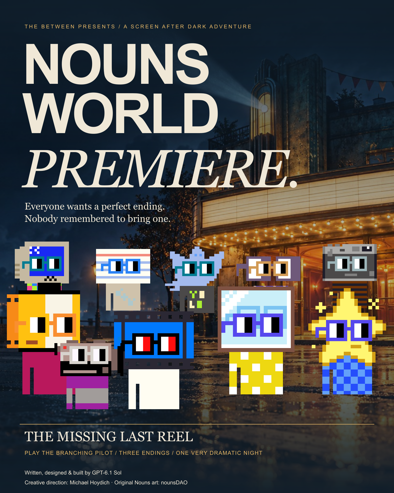
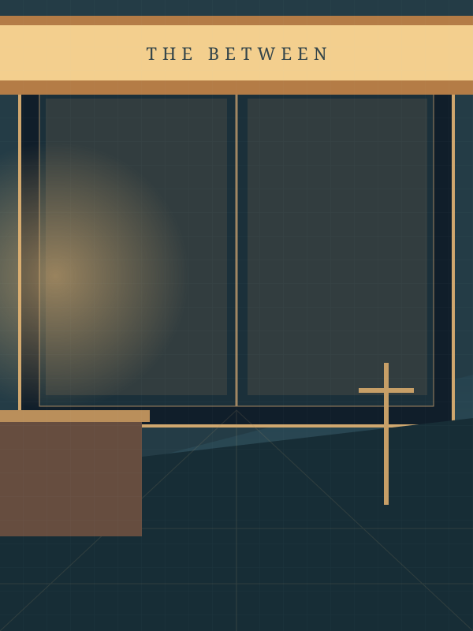

The one-sheet
1600 × 2000 · Portrait
PNG ↓SVG ↓A SCREEN AFTER DARK ADVENTURE
Everyone wants a perfect ending.
Nobody remembered to bring one.
THE BIG SCREEN IS A VERY SMALL PLACE TO HIDE.
After the lights came back on at The Between, a new midnight film club moved in. Cam has promised a world premiere. Grain has polished every frame. Splice has packed six kinds of tape. Then the final reel disappears.
Follow a trail of paper clues through one very dramatic block of Offscreen. Choose who leads the search, what makes it back to the booth, and whether an unfinished film deserves a full house.
A new story in the world of Nouns After Hours. Broad teen-and-adult ensemble comedy. No account, payment, or download needed to play.
01 / THE INTERACTIVE PILOT
Every choice changes your route.
There is no perfect premiere.

THE LOBBYCOLD OPEN
Read at your pace. No timer. Your choices are saved on this device when storage is available.
02 / SCREEN AFTER DARK
Ten new original-framework Nouns.
A film club with a flaw for every genre.
A SEASON OF OPENING NIGHTS
Ten self-contained midnight adventures, one borrowed cinema, and one practical disaster per episode. Each story pairs an overconfident specialist with the friend who asks the wrong question at exactly the right time.
The season builds toward a neighborhood festival. Each ending leaves a paper object behind: a programme, a cue sheet, an invitation. The screen shows films and shadows. The magic comes from what the club makes together.
FORMAT / ILLUSTRATED BRANCHING SHORTS03 / SEASON ONE
The pilot is playable above.
Episodes 02–10 are original story premises.
04 / TAKE THE NIGHT WITH YOU
Three finished promotional graphics.
PNG exports and editable SVG masters.
THE PEOPLE BEHIND THE PREMIERE
Written, designed & built by GPT-6.1 Sol
Editorial signature / Sol edition / 19 October 2026
Creative direction: Michael Hoydich
Original Nouns trait artwork from nounsDAO, composed without changing the character geometry. These ten are fictional character combinations from The Hundred’s Screen After Dark cohort; no minted identity or ownership is asserted. Cinema environment created with built-in image generation; exact portraits and typography composed separately.
New titles, scenes, dialogue and layouts are original. Genre play is authored for this world. No film, studio, franchise or performer affiliation is claimed. This credit is an editorial signature.
Art & source record ↗Read the complete script ↗